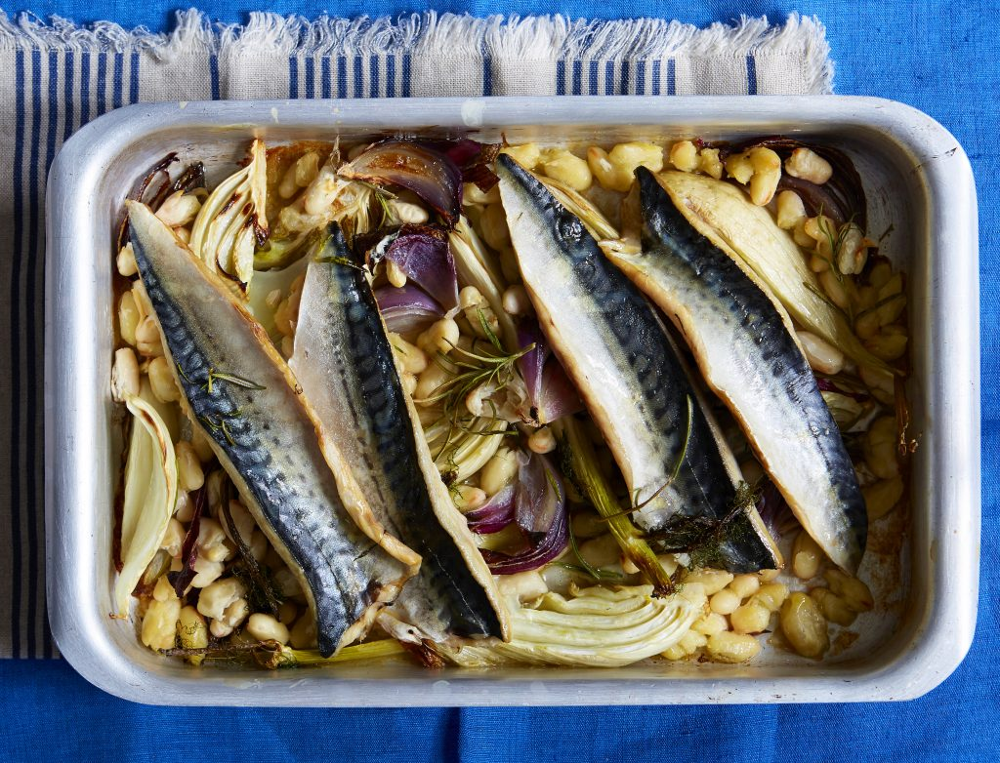

June

Summer really kicks off in June. It’s the best month for broad beans, pak choi and courgettes, while strawerries, raspberries, blueberries and tomatoes have started to ripen. Haddock and mackerel also come into season.
Fruit
Apricot (coming into season)
Blueberries (coming into season)
Cherries
Vegetables
Broad beans (in season mid-June)
Carrots
Peppers
Meat
Lamb
Fish and seafood
Salmon
Tuna